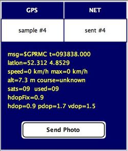
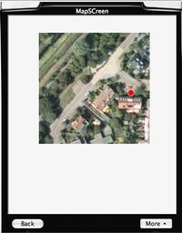
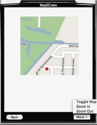

[Home] [TraceLand] [MobiTracer] [Presentation] [Documentation]
About
The MobiTracer is the mobile phone application. It connects to both a Bluetooth GPS receiver and the GeoTracing server. When running, MobiTracer will read GPS location data and sends these to the server. In addition, while tracing you can issue various commands to manage your tracklog data and make annotations (POIs/media). Users that are trying out MobiTracer can find more specific notes in this document.
Getting MobiTracer
Go to www.geotracing.com/gt and select "My|Login".
Screenshots

This shows the main screen. The left top label show the status of your GPS. The right top label shows the network status (sending GPS locations or paused). The middle shows various GPS or track info. At the bottom is a single button to issue various commands (see below).
 
On the MapScreen you can view your location on a Google Map.
Installation
MobiTracer is installed Over The Air (OTA), i.e. through a URL from your mobile phone.
Compatibility
Your phone needs to at least support J2ME MIDP2.0 with the Java Bluetooth API (JSR-82). See also this list of JSR-82 phones and optionally the J2ME MultiMedia API.
Manual
Below a short manual for those experimenting with MobiTracer. There is just one button at the bottom of the screen. The content of that button can be changed through the joystick on your phone. Firing the joystick issues the specific command. Below are the commands. Basically you are managing tracklogs that are kept on the server.
- NewTrack - create a new track
- Suspend Track - pause sending GPS data to server (on startup GPS sending is paused)
- Resume Track - resume sending GPS data to server
- Add POI - add a point of interest
- Send Photo - make a photo and add it to track (server will geotag location)
- Send Audio - make audio recording add it to track (server will geotag location)
- Sound Off - toggle beeps made when GPS samples are read and send to server
- Hide GPS Info - hide/show detailed GPS information on screen
- Lock Keyboard - lock the apps keys to prevent unwanted commands (unlock with #5)
- View Log - view the log messages (for troubleshooting)
- SelectGPS - find and pair your Bluetooth GPS to the phone
- Keys 1 through 5 - set the "RoadRating" e.g. asphalt rating (1=worst, 5=best)
- Show Map - view your location on a (Google) map (experimental)
- Quit - exit MobiTracer app
Usage
On first startup you need to pair your GPS. Issue the command "SelectGPS". Follow the directions on the form and exit MobiTracer. Start MobiTracer again and verify that the GPS connects ("connected" under GPS label) and that you get GPS data and can connect to the server.
On first start you need to create a track through the "New Track" command. From then on all GPS data, POIs and media are coupled to that track. MobiTracer always operates on a single track being your active track. Creating a new track always will archive the current track.
Note that GPS sending is by default paused. To start sending issue the command "Resume Track". Likewise to pause sending (e.g. when taking a break) issue "Suspend Track". Basically you are creating "track-segments" within your track.
Beeps: a low beep indicates a GPS-location is read. A high beep indicates that a GPS-location is sent to the server. If this annoys you, toggle sound with the command "Sound On/Off". I usually lock the keyboard (command "Lock Keyboard") and put the phone in my pocket. hearing the beeps indicates all is well and working.
Road rating: use the numeric keys 1-5 to set the road-rating for the current track. Default is -1 (no rating). While going the current rating is remembered and added to each sample sent to the server. Ratings may later be visualized with colours on the website.
Sending media: within MobiTracer the commands "Send Photo" and "Send Audio" can be used to send media directly from within the application. The photo's are low-res currently. In addition you can send media through email (as attachments), either from your phone or any other means. In particular you can make .3gp movies on your phone and send them by email from the gallery. Your phone's email address needs to be known on the server as part of your subscription. I use a digital camera (Canon Ixus) and send photo's later. By timestamping your photo gets geotagged. For .3gp movies the time of email sending is used, so in that case you will have to send in immediately.
GPS info: important values for the precision are the number of satellites used ("used"), should be 5 or more and the "hdop" values (should be about less than 2 or 3).
Viewing Your Tracks
View them at www.geotracing.com/gt, the TraceLand page. Use the menu to show live or archived tracks (Show). You can change the background map with Map menu.
It doesn't work !
Yes this MobiTracer is experimental and under constant development. There's a wealth of mobile phone types, GPS types and provider-specific issues. See this document for some specific notes.
Just van den Broecke - just AT justobjects.nl